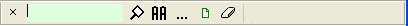

Einen bestimmten Text suchen
Password Safe erlaubt es nach Einträgen zu suchen, die einen vorgegebenen Text enthalten. Dies ist dann nützlich, wenn Sie sich am Namen des Eintrages nicht mehr genau erinnern, aber noch gut wissen, was "drin" steht, z.B. der Eintrag mit Maria in den Notizen.
Um eine geöffnete Datenbank zu durchsuchen, drücken Sie Strg-F (oder Bearbeiten->Eintrag Suchen). Es erscheint eine Suchleiste über die Statusleiste am unteren Ende der Anwendung so ähnlich wie folgt:

Die einfachste Methode ist es, einfach der Text wonach Sie suchen einzugeben und die Enter-Taste zu drücken, oder auf das Symbol des Vergrößerungsglases auf der rechten Seite des Textfeldes zu klicken. Die Anzahl der Treffer (wenn überhaupt) wird am rechten Ende der Suchleiste angegeben. Der erste Text, der übereinstimmt, wird ausgewählt und hervorgehoben. Das mehrmalige Drücken der Enter-Taste (oder Klicken des Vergrößerungsglases) führt zum nächsten übereinstimmenden Text. Wenn alle Einträge ausgewählt wurden, fängt das Spiel von vorne wieder an.
Die Taste F3 wiederholt das Suchen. Durch wiederholtes Drücken von F3 kann der Eintrag mit dem gewünschten Kriterien leicht erreicht werden. Durch Drücken der Umschalt-Taste kann rückwärts gesucht werden. Wenn sie mit dem Vergrößerungsglas arbeiten, wird die Umschalt-Taste ebenfalls die Suchrichtung umdrehen.
- Um die Suchleiste zu schließen, klicken Sie auf das 'x' an der linken Seite des Textes, oder drücken Sie noch mal Strg-F.
- Standardmäßig läuft die Suche ohne Groß/Kleinschreibung. Um mit Groß/Kleinschreibung zu suchen, drücken Sie das "AA"-Symbol. Dieses Symbol ändert sich dann in "Aa".
- Um eine erweiterte Suche zu machen, wie z.B. das Einschränken auf bestimmte Felder oder Einträge usw., drücken Sie das Symbol "...".
- Um ein Report der letzten Suche zu erstellen, drücken sie
 .
. - Um den Suchtext zu löschen, klicken Sie auf das "Löschen"-Symbol.